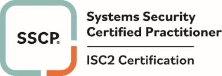
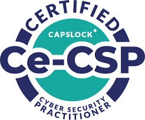
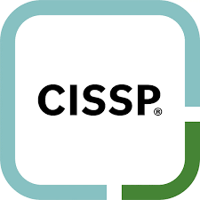

Certifications
Certificate of Cloud Security Knowledge (CCSK)
BCS Foundation Certificate in Information Security Management Principles (CISMP)
Palo Alto Networks Certified Security Automation Engineer (PCSAE)

Systems Security Certified Practitioner (SSCP)
ISO 27001 Certified

Ce-CSP Certified

Working Towards: Certified Information Systems Security Professional (CISSP)

Working Towards: Python Institute Certified Associate in Python Programming (PCAP)